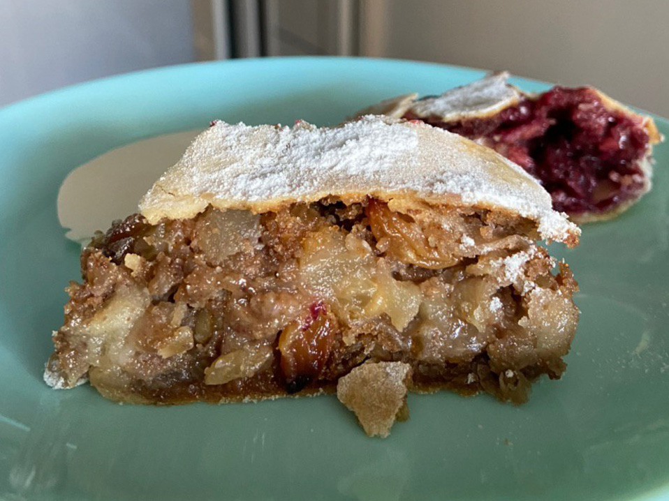

Венский штрудель с яблоками
Ингредиенты
Тесто:
- 🌾 Мука - 300г
- 💧 Теплая вода - 150мл
- 🌻 Растительное масло - 30 мл (2ст.л.)
- 🧂 Соль - 0,5 ч.л.
- 🧈 Растопленное сливочное масло - 50-100г
Начинка:
- 🍎 Яблоки (кислые) - 1кг
- 🍇 Изюм - 150г
- 🍬 Сахар - 140г
- 🌰 Орехи - 100г
- 🍞 Сухари - 100г
- 🧈 Сливочное масло - 50г
- 🤎 Корица - 1 ч.л.
Приготовление
Приготовим вытяжное тесто. Соединить в миске муку (предварительно просеять) и соль, перемешать. В центре сделать ямку, в которую влить подсолнечное масло и теплую воду. Замесить тесто. Оно должно получиться мягкое и не липнуть к рукам. Смазать тесто растительным маслом, обернуть в пленку и убрать в теплое место на 1 час.
В это время можно заняться начинкой. 100 г сухарей измельчить в блендере. На сковороде растопить 50 г сливочного масла и обжарить измельченные сухари до золотистого цвета. Орехи обжарить, очистить и измельчить. Изюм залить кипятком. Через две минуты воду слить. Сахар смешать с корицей. Почищенные яблоки разрезать, удалить сердцевинки и нарезать мякоть тонкими пластинками.
Через час застелить стол тканью, присыпать мукой. Тесто разделить на две части. Раскатать каждую часть, затем вытягивать руками до толщины папиросной бумаги. Накладываем начинку. Заворачиваем. Защипнуть края и перенести штрудель на противень. Смазать рулет растопленным маслом. Выпекать при 180 ºC примерно 40 минут.